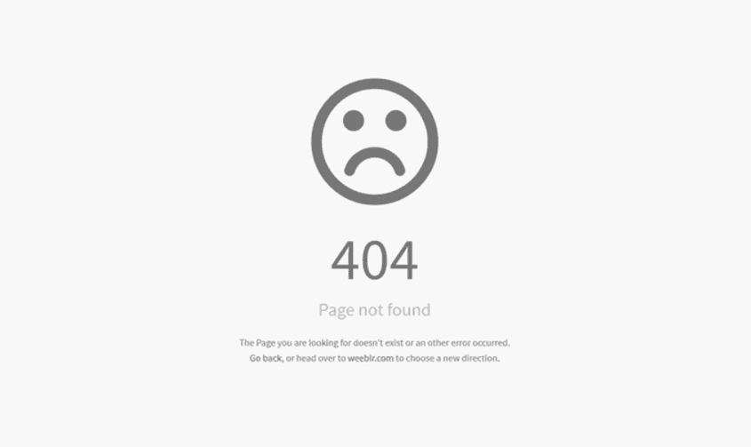

Challenges
Our biggest challenge with this lab was figuring out how to interpret the insturctions and complete the lab given that we do not have any previous labs that require any debugging. Throughout the course, we have delivered code that works precisely as intended without any errors.
Problems
Our only problems consisted of not having any previous labs to debug, and not wanting to spend time working on the bonus tasks. Without any labs to debug, we were very unsure of what to submit for this lab. We've bypassed the issue by just writing up a summary that explains our predicament.
Results
Our results are unexciting. Take a look below.
Debugging
Error 404: Bugs not found.
